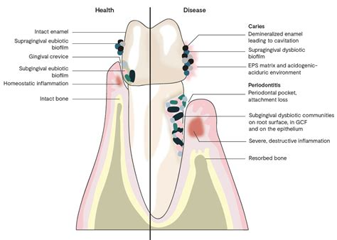
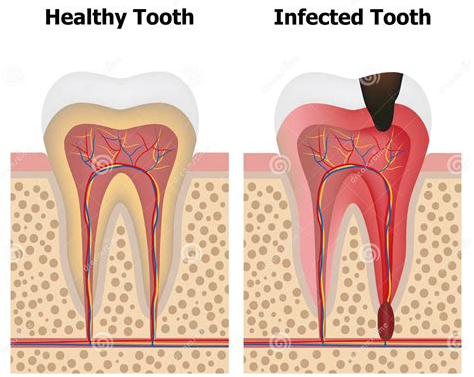

龋齿
危险程度
中风险
就医建议
建议及时就医
最佳就医时间
发现症状后尽快
什么是龋齿？
龋齿（Saprodontia）是牙齿硬组织发生慢性进行性破坏的疾病，常由细菌感染引起。
关键特征：
- 牙齿颜色失去光泽，逐渐形成龋洞
- 牙齿质地疏松软化
- 对冷热、酸甜刺激敏感
- 出现短暂性疼痛
青光眼分类
窝沟龋
窝沟结构狭窄深凹，易滞留细菌和食物残渣，早期不易发现
邻面龋
早期多在牙釉质或牙本质浅层，外观不易察觉，可能表现为邻面白垩色斑块或接触点下方脱矿
颈部龋（根面龋）
病变沿牙颈部环形发展，牙骨质和牙本质受累，常伴敏感症状，常见于牙龈退缩、牙根暴露的中老年人
平滑面龋
早期表现为白垩色斑块，逐步向深层发展，多见于卫生状况较差或唾液分泌不足者
图示说明：
图1：龋齿发病机制示意图

上图展示了龋齿的发病机制
图2：正常眼睛与青光眼对比图

上图展示了正常牙齿与龋齿的对比
主要症状
阶段症状
牙釉质龋
牙齿出现白垩色斑块或棕褐色斑点
牙本质浅层龋
形成明显龋洞，洞内可见软化的腐坏牙本质（呈黄褐色或黑褐色），对冷热刺激、酸甜食物敏感，食物嵌塞入龋洞时可能出现 短暂疼痛，清理后缓解
牙本质深层龋
龋洞深大，接近牙髓（牙神经）洞内腐质较多，牙齿结构可能变脆。敏感程度明显增强，食物塞嵌疼痛明显
牙髓炎
无明显刺激时，牙齿阵发性、剧烈疼痛，冷热刺激痛加重
根尖周炎
持续跳痛或胀痛，牙龈表面形成脓包，严重时可能伴随面部肿胀、发热、淋巴结肿大，儿童患者更为明显
急性发作症状
急性龋
大面积棕黑色龋洞，对酸甜冷热刺激极度敏感
急性牙髓炎
出现阵发性尖锐疼痛，受刺激疼痛加重，疼痛可放射至面部、太阳穴、耳后。
急性根尖周炎
明显的咬合痛，牙龈部位红肿、压痛明显，可能伴随全身发热、乏力、颌下淋巴结肿大
疾病进展
早期
无自觉症状
中期
短暂刺激痛，对冷热、酸甜敏感
晚期
疼痛较剧烈，刺激去除后疼痛消失
治疗方法
药物治疗
- 涂抹氟化钠溶液
- 涂抹氟化亚锡
- 涂抹含氟涂料
- 涂抹硝酸银溶液
充填治疗
- 预防性树脂充填（浅龋）
- 垫底充填术（中龋）
- 根管充填（间接盖髓术）
拔牙
- 牙齿龋坏严重无法修复可考虑拔牙
安抚治疗
- 先放置丁香油氧化锌糊剂安抚牙髓，暂封 1~2 周，无症状再永久充填
预防建议
定期检查
建议每年至少一次口腔检查，高风险人群（如：儿童、老年人、口干症患者）每3-6个月检查一次
保持口腔清洁
使用巴氏刷牙法，减少牙菌斑
控制糖频
减少吃糖次数，尤其避免睡前含糖饮食
科学用氟
含氟牙膏 + 专业涂氟，增强牙齿抵抗力
推荐医院
北京同仁医院
北京市东城区东交民巷1号
010-58266699